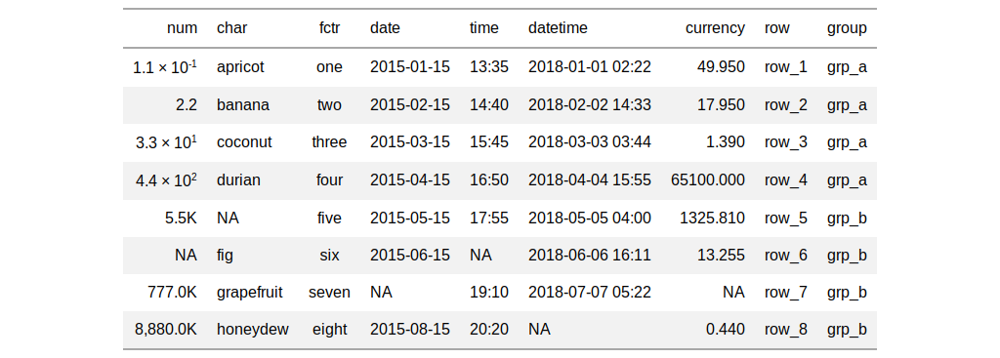

| fmt_scientific {gt} | R Documentation |
With numeric values in a gt table, we can perform formatting so that the targeted values are presented in scientific notation. We can exert finer finer control on the formatting with the following options:
decimals: choice of the number of decimal places, option to drop trailing zeros, and a choice of the decimal symbol
scaling: we can choose to scale targeted values by a multiplier value
pattern: option to use a text pattern for decoration of the formatted values
locale-based formatting: providing a locale ID will result in formatting specific to the chosen locale
fmt_scientific(data, columns, rows = NULL, decimals = 2,
drop_trailing_zeros = FALSE, scale_by = 1, pattern = "{x}",
sep_mark = ",", dec_mark = ".", locale = NULL)
data |
a table object that is created using the |
columns |
the columns to format. Can either be a series of column names
provided in |
rows |
optional rows to format. Not providing any value results in all
rows in |
decimals |
an option to specify the exact number of decimal places to
use. The default number of decimal places is |
drop_trailing_zeros |
a logical value that allows for removal of trailing zeros (those redundant zeros after the decimal mark). |
scale_by |
a value to scale the input. The default is |
pattern |
a formatting pattern that allows for decoration of the
formatted value. The value itself is represented by |
sep_mark |
the mark to use as a separator between groups of digits
(e.g., using |
dec_mark |
the character to use as a decimal mark (e.g., using
|
locale |
an optional locale ID that can be used for formatting the value
according the locale's rules. Examples include |
Targeting of values is done through columns and additionally by
rows (if nothing is provided for rows then entire columns are
selected). A number of helper functions exist to make targeting more
effective. Conditional formatting is possible by providing a conditional
expression to the rows argument. See the Arguments section for more
information on this.
an object of class gt_tbl.

Other data formatting functions: data_color,
fmt_currency, fmt_datetime,
fmt_date, fmt_missing,
fmt_number, fmt_passthrough,
fmt_percent, fmt_time,
fmt, text_transform
# Use `exibble` to create a gt table;
# format the `num` column as partially
# numeric and partially in scientific
# notation
tab_1 <-
exibble %>%
gt() %>%
fmt_number(
columns = vars(num),
rows = num > 500,
decimals = 1,
scale_by = 1/1000,
pattern = "{x}K"
) %>%
fmt_scientific(
columns = vars(num),
rows = num <= 500,
decimals = 1
)